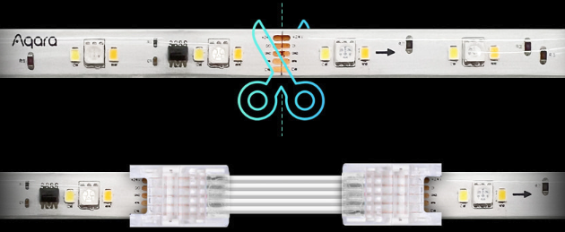

39 LED 스트립 T1
39.1 설치
질문 1: LED 스트립 T1의 설치 방법을 알 수 있을까요?
답변 1:
LED 스트립 T1 의 설치 영상과 매뉴얼은 아래 링크를 클릭하시면 보실 수 있습니다.
질문 2: 연장키트를 이용해서 기존 LED 스트립 T1의 길이를 연장할 때, 최종 길이를 맞추기 위해 몇 cm 단위로 자를 수 있는지요?
답변 2:
기본 LED 스트립 T1의 스트립 길이는 2미터입니다. 여기에서 1미터 길이의 연장키트를 총 10미터 길이 (기본 LED 스트립 T1 2미터 포함)까지 연결할 수 있습니다. 최종 길이를 맞추기 위해서는 절단이 필요할 수 있는데 이 경우 20cm 단위로 자를 수 있습니다.

질문 3: LED 스트립 T1을 설치하고 고정하는 방법은 무엇인지요?
답변 3:
LED 스트립 T1을 설치하고 고정하는 방법은 다음과 같습니다. 설치할 때 내장된 3M 접착제를 사용하십시오. 평평하고 건조한 표면을 보장하십시오.
39.2 사용팁
질문 1: LED 스트립 T1은 연장키트(Extension Kit) 연결해서 사용시 몇 미터까지 확장할 수 있나요?
답변 1:
LED 스트립 T1의 스트립 (2미터)와 8개의 연장키트(1미티) 를 연결한 총 10미터까지 확장할 수 있습니다.
질문 2: LED 스트립 T1은 전원을 끈 후 다시 켰을 때 전원 차단 전의 상태를 유지할 방법이 있는지요?
답변 2:
네, 전원 차단 전의 상태를 유지할 방법이 있습니다. LED스트립 T1 메인화면에서 “…” 를 누릅니다. “기기 설정” >> “전원 켜진 후 상태 결정” 옵션 중에서 “전원 차단 전 상태로 유지” 선택하시면 됩니다.
질문 3: LED 스트립 T1의 페이드 인/아웃 시간을 조절할 수 있는지요?
답변 3:
네, 500 msec 간격으로 시간 조절 가능합니다. LED스트립 T1 메인화면에서 “…” 를 누릅니다. “기기 설정” >> “조명 켜기/끄기 전환 설정”에서 원하는 페이드인/아웃 시간을 설정하실 수 있습니다.
질문 4: LED 스트립 T1의 밝기 조절 범위를 설정할 수 있는 지요?
답변 4:
네 가능합니다. LED스트립 T1 메인화면에서 “…” 를 누릅니다. “기기 설정” >> “밝기 조절 범위 설정”에서 새로운 최소/최대 밝기를 설정하실 수 있습니다.
질문 5: LED 스트립 T1과 다른 아카라 디바이스와 연동하여 영화관 모드를 만드는 자동화를 설정하고 싶은데, 가능한 씬을 추천해 주시겠습니까?
답변 5:
클릭 한번으로 우리집을 영화관으로 만들 수 있습니다. 영화가 더 재미어지도록 무선노브 스위치 H1하나로 영화관 모드 설정과 섬세한 밝기 조절을 하실 수 있습니다. 다음과 같이 자동화를 만들어 보세요.
IF: 무선 노브 스위치 H1 한번 누르기
THEN: LED 스트립 조명 영화관 모드 ON + 커튼 닫힘 + TV켜짐
필요 아카라 디바이스: IR리모컨 허브 + LED 스트립 조명 + 커튼 컨트롤러
질문 6: LED 스트립 T1으로 낯선 사람의 침입을 경계하는 보안모드를 만들어 볼 수 있을까요?
답변 6:
네, G3 카메라 허브와 연동하여 거실을 어슬렁거리는 낯선 사람을 감지했을때 적색 조명과 경보 알림을 울리고, 영상 기록 확보까지 할 수 있도록 다음과 같은 보안모드 자동화를 구현할 수 있습니다.
IF: 외출모드일때 스마트 홈카메라 허브 G3가 등록되지 않은 얼굴인식
THEN: LED 스트립 조명이 붉은 빛으로 깜빡이고, 스마트 홈카메라 허브 G3의 보안 알림 울림
필요 아카라 디바이스: G3 + LED스트립 조명
질문 7: 밤에 화장실을 갈때 불을 켜면 잠이 깨어서 더 이상 잘 들지 못하는 경우가 많습니다. LED스트립 T1을 안전한 발길을 비춰주는 무드등형태로 사용할 수 있나요?
답변 7:
네 가능합니다. 빛을 따라 걷는 안전하고 특별한 경험을 느끼실 수 있습니다. 어두운 밤 눈을 떳을때 내딛는 발길 따라 켜지지 LED 스트립 조명으로 밝은 빛에 다시 잠들지 못할 까 걱정할 필요없이 안전한 발걸음의 길잡이가 되어 줄 것입니다. 아래와 같이 설정해 보세요.
IF: 재실 센서 FP2가 밤 9시 이후 움직임 감지
THEN: LED 스트립 조명 켜짐
필요 아카라 디바이스: 아카라 허브 + LED 스트립 T1 + 재실 센서 FP2
질문 8: 네트워크에 연결된 후 LED 스트립 T1을 어떻게 리셋 시킬 수 있나요?
답변 8:
LED 스트립 T1의 전원 버튼을 5초 동안 길게 눌러 재설정하세요.
질문 9: 백색광 모드는 세그멘트 제어를 지원하나요?
답변 9:
RGB모드만이 세그멘트 제어가 가능합니다.
질문 10: LED 스트립 T1의 버튼들의 기능은 무엇인가요?
답변 10:
켜기/끄기: 스트립을 제어하며, 길게 눌러서 장치를 재설정합니다. 조명 모드 전환: 조명 모드를 전환합니다. 음악 동기화: 음악 동기화 효과를 열거나 전환합니다. 마이크: 음악 동기화 모드에서 소리를 감지합니다.
질문 11: 음악리듬 모드를 효과적으로 사용할 수 있는 거리는 얼마인가요?
답변 11:
이 장치에는 컨트롤러에 내장된 마이크가 있습니다. 음악 동기화 모드가 활성화되면 마이크는 일정 범위 내의 음악, 목소리 등을 감지할 수 있습니다. 소리원이 너무 멀리 떨어져 있거나 볼륨이 너무 낮으면 마이크가 소리를 감지하지 못할 수 있습니다. 최상의 성능을 위해 소리원을 가능한 한 컨트롤러에 가깝게 배치하는 것이 좋습니다.
질문 12: LED 스트립 T1은 네트워크 연결없이도 동작되나요?
답변 12:
기본 기능은 오프라인으로 사용할 수 있습니다. 그러나 색온도, 색상 및 다이내믹 효과 조정과 같은 고급 기능을 사용하려면 아카라홈 앱 또는 애플홈 앱에 연결해야 합니다.
질문 13: LED 스트립 T1은 방수 지원하나요?
답변 13:
ED 스트립 T1은 IP44 등급을 갖고 있으며 먼지로부터 보호되어 실외에서도 사용할 수 있습니다. 참고하십시오: 이는 LED 스트립 자체에만 해당되며, 매뉴얼 컨트롤러 및 전원 공급 장치는 방수가 되지 않으므로 실내에 설치해야 합니다.
39.3 Troubleshoot
질문 1: LED 스트립 T1과 Extension Kit을 사용하고 있습니다. 길이를 조정하기 위해서 LED 스트립 선을 일부 절단해야 합니다. 주의할 사항이 있는지요?
답변 1:
스트립을 잘라서 사용하실 경우 반드시 전원이 차단된 상태에서 제품에 표시된 위치를 따라 깨끗하게 재단하셔야 합니다.
그리고, 재단하고 남은 스트립은 재사용이 불가합니다.
이유는 다음과 같습니다.
- IC칩이 없는 일반 스트립의 경우 잘라낸 부분을 납땜해서 사용할 수 있습니다
LED 스트립 T1는 RGBIC 스트립입니다. 대부분의 RGBIC 스트립은 서로 상호 작용하는 칩이기 때문에 잘라낸 부분을 정상적으로 사용하기 어렵습니다.
스트립에 따라 잘라서 사용할 수 있는 경우도 있으나 아카라 RGBIC의 경우 잘라낸 부분을 사용할 수 없습니다.(실리콘을 잘라내서 단자를 납땜하는 등의 작업을 권장하는 경우는 없기 때문입니다.)
질문 2: 연장키트를 LED 스트립 T1의 스트립에 연결했는데, 연장된 스트립에는 불이 들어 오지 않습니다. 어떻게 해야 하나요?
답변 2:
연장키트로 스트립을 연결했다고 하더라도, 자동으로 연장된 스트립부분을 인식하지 않습니다. 안전을 위해서 다음과 같은 설정을 앱에서 진행하셔야 합니다. LED스트립 T1 메인화면에서 “…” 를 누릅니다. “기기 설정” >> “라이트 스트립의 실제 길이 설정” 에 들어 가서 맨하단의 “라이트 스트립의 실제 길이 설정”을 총 길이에 맞게 하셔야 합니다. 예를 들어, 연장키트 1개를 연결하셨다면, LED스트립 T1의 2미터와 연장키트 1미터를 합한 3미터를 설정하셔야 합니다.
질문 3: LED 스트립 T1을 허브에 추가하려고 여러번 시도 중인데 성공적적으로 추가 되었다고 메시지가 나오는데 목록에서는 찾을 수 없습니다. 해결책이 있는지요?
답변 3:
LED 스트립 T1초기화 할때 전원 버튼이 아닌 가운데 조명 모드 버튼을 이용해서 장치 등록을 시도해 보시기 바랍니다.